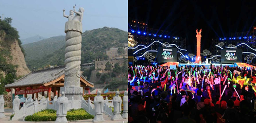

（凤凰旅游讯） 5月5日晚9：15，《人说山西好风光》第二季，2017年山西旅游发展大会首场电视竞演亮相山西卫视，临汾对阵太原在云丘山风景区展开第一场比拼。 今年最大的创新是竞演场地从室内搬到了室外，直接落地各个城市的景区景点，实现景区大联欢、全民大互动；最大的看点在于主客场赛制，借鉴体育赛事来进行文化旅游资源、形象、服务等的大PK；竞演全过程不淘汰，每个城市均参加主场、客场、决赛，嘉宾、观察团、网络三项分数相加，最终决定主办城市。通过抽签，首场由主场临汾与客场太原进行对擂。因为是首场，格外引人关注。
作为主场，临汾将竞演舞台选在了云丘山景区。春天的云丘山绿意盎然，春风拂面，花香袅袅。录制地就选在云丘山景区的中和广场，周边40000㎡的景观全部亮化，包括广场标志物的图腾柱、五龙宫山体、百米古街等，在夜色中呈现出亦真亦幻的华彩美景。
 云丘山景区的中和广场 探秘临汾云丘山古村现场四位点评嘉宾分别为《舌尖上的中国》总导演陈晓卿老师，《中国诗词大会》中知识渊博的蒙曼老师，风趣幽默的周炜老师，盈科旅游创始合伙人、执行总裁王涛。另外还有30位由专家，媒体及旅游达人组成的观察团。
竞演开场，紧扣“中国根，黄河魂” 主题，以威风锣鼓+电光鼓秀+灯光秀+多媒体视频，弘扬传统文化的同时不忘与时俱进，展现高科技的表演形式，现场1500名观众的激情瞬间被点燃。
我的城市我的家
第一个竞演主题“我的城市我的家”，太原首先出场，主打小事件背后的大情怀，由祖孙俩讲故事入手，舞台上从晋祠圣母殿的宋塑侍女像、晋祠铁人，到极具现代感的模特走步，又融入面食表演，由静而动、由古至今，充分诠释了太原是一座古老而年轻的城市，拥有的不仅仅是厚重的历史和悠远的文化，还充满了无限的生机和童趣。王为念作为太原的城市代言人，用太原话为家乡发出邀请：“还等甚了，来哇”。
临汾市以“我从哪里来”为中心思想，通过谭氏家族寻根的“离别”“家书”“回家”三个方面，演员现场情景演绎与投影结合，著名主持人春妮作为临汾的城市推介人来到舞台，讲述谭氏寻根的感人故事，最后她带着谭氏家族后人（四世同堂），从幕布后回到舞台，谭氏后人讲述了自己落叶归根的情怀，打造临汾“华人老家”城市名片。
追梦的新晋商
第二个竞演主题“追梦的新晋商”环节中，太原推出水塔醋业董事长武峥兴和演员们用父子对话、视频短片、音乐、舞蹈等多种形式演绎了山西醋的故事，给了我们最好的答案：靠的是诚信、凭的是品质、诚信和品质是晋商的根与魂。
临汾市云丘山景区董事长张连水，讲述了自己“一个人14年12亿做一件事”的新晋商精神，随后张连水请出自己的儿子，以《竞选大会》的形式，讲述了自己和儿子之间的故事，争当云丘山景区的代言人，张连水在现场还给大家分享了他妻子做的特色美食——太太饼。
两位新晋商的演绎，将新晋商的故事与精神表达得恰如其分。
副市长变身“超级导游”
最后一个竞演是自选主题，在开场的视频中，太原市副市长陈向阳作为“超级导游”，穿着蓝色休闲服、戴着耳麦，无比接地气领着一群游客娓娓道来，领略景区好风光。随后他登台朗声介绍了太原市着力打造山水资源禀赋的自然神韵，高起点、高标准规划实施的一批文化旅游产业项目，展示出省会太原旅游产业振兴崛起的广阔前景。
太原市副市长陈向阳临汾市副市长胡小濛作为“超级导游”和临汾城市推介人春妮、临汾旅游吉祥物咚咚同台互动， “大开脑洞看未来”，将“城市智慧岛”搬上舞台，请观众现场体验，最后由AR展示厕所的高科技设计，给游客带来的便利服务，全方位展示城市智慧岛的智能，高科技，人性化的科技感，展现未来临汾旅游业态的发展理念和发展模式。
临汾市副市长胡小濛三个环节的比拼，点评嘉宾多次被两个城市真诚、质朴的推介所感动，周炜评价两位晋商，潜心研究产品的文化内涵，打造文化产品，值得称赞。蒙曼笑谈，今天是晋阳和平阳之间的比拼，希望两个城市在这样一个春气上升的时候，加油向未来。
竞演间隙，临汾将当地的传统武术通背缠拳搬上舞台，将中国传统武术文化与高科技舞蹈荧光舞相结合，完美展示出中国人的力与美。还有传统文化“剪纸”融合到舞蹈当中，并结合当下流行的鬼步舞，充分展现了山西儿女对传统文化的传承。


Copyright 2015. YUNQIUSHAN.ALL Rights Reserved. ICP 备案号：晋ICP备12007937号 乡宁县云丘山旅游开发责任有限公司版权所有